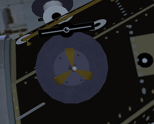
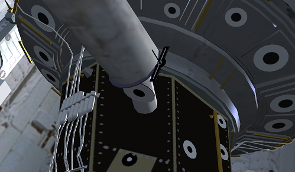
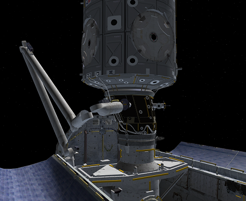
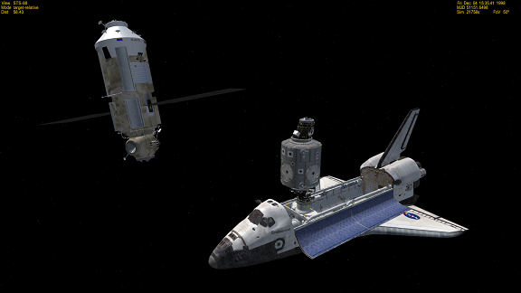
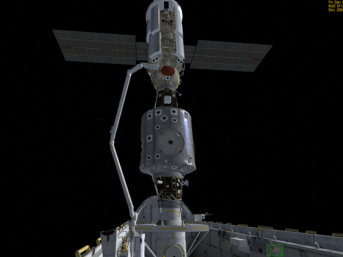

ISS v3.2 STS-88 ザーリャとユニティのドッキング
STS-88ミッションの概要
- ユニティ（Unity）モジュールを積んだシャトルを軌道上に打ち上げる。
- シャトルでザーリャ（このシナリオでの名前はISS）とランデブーする。
- ロボットアームを使って、ユニティをシャトルとドッキングさせる。
- ロボットアームを使って、ザーリャをとらえる。
- ザーリャとユニティをドッキングさせる。
- シャトルがユニティから離れる。
この記事では、ロボットアームを使ったユニティ・ザーリャのドッキングについて解説します。
ユニティとシャトルのドッキング
スペースシャトルが軌道に乗ったら、キーボードのKを押してペイロードベイのドアを開ける。
スペースシャトルのロボットアームの操作については、以下の記事を参照してください。
Shuttle Fleet ロボットアーム(RMS)の操作
ロボットアームを操作して、先端を接続可能なポイントに重ねる。
この部品を探して、

そこにアームの先端をくっつける。

RMSダイアログのGrappleボタンをクリックして接続する。
ロボットアームを操作して、ユニティモジュールをシャトルのドッキングポートにくっつけるように移動させる。

ロボットアームの関節が外れて見えるのは仕様です…
両者のドッキングポートが接触した状態で、RMSのReleaseボタンをクリックすると、自動的にドッキングされる。
両者のドッキングポートの位置が揃っていないとドッキングされない。
Releaseしても接続されない時は、もう一度Grappleして位置を調整する。
ザーリャとユニティのドッキング
ザーリャ（このシナリオだとISS）とランデブーする。
ユニティが接続された状態だと操縦がやや不安定になるので注意すること。
スペースシャトルを操作して、ザーリャ（ISS）にアームが届く距離まで接近する。

ユニティと同じように、ロボットアームを使ってザーリャを捕獲する。
ロボットアームを使って、ザーリャとユニティのドッキングポートが重なるように、ザーリャを移動させる。

Releaseすれば自動的にドッキングされる。
シャトルとユニティのドッキングを解除すれば、ミッションは完了です。